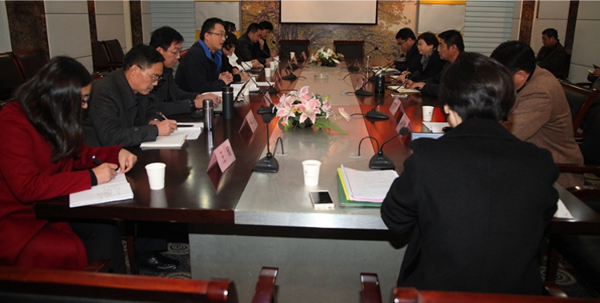

做好充分准备 迎接期末考试-----第19周国旗下的讲话
2015-12-12 15：30
泰州中学

12月9日—11日，我校在市教研室大力支持下，组织了政治、历史、地理三门学科的专项教学校本诊断评价活动。本次活动邀请了省内名校教学一线的6名专家来校督导。期间，督导组随机听课34节，查阅了三门学科各年级的学期工作计划、高二学业水平测试复习计划、本学期校本教学案和校本作业、教师的备课笔记、听课笔记、学生作业等，并与多名教师、学生访谈。各学科专家就督导情况在相关教研组做了深度交流反馈。在督导反馈会上，三位学科专家做了主题发言，就学科建设、课堂教学特别是学测复习给出了宝贵的建议。董校长做总结讲话，他要求相关部门和教研组认真梳理专家们提出的意见和建议、逐一分析研究落实，以进一步提高课堂教学质量，提升学科建设水平。